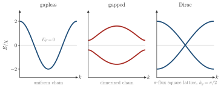

Advanced Quantum Materials 2027 · All lectures · Lecture notes
Session 8. Quantum Magnetism, Spinons and Kondo Physics
8.9 The mean-field spinon Hamiltonian and its dispersion classes
We put the couplings and the expectation value of (8.14) together into one mean-field parameter \(\chi_{ij}\) per bond, and if needed we impose the constraint (8.11) on average with a Lagrange multiplier. In this way, the mean-field decoupling of Section 8.8 turns the original spin problem into a real Hamiltonian for the auxiliary fermions, which has the form of a tight-binding model and which we can diagonalize,
\[\mathcal H_\text{MF} = \sum_{ij,s} \chi_{ij}\, f^\dagger_{i,s} f_{j,s}. \tag{8.15}\]
This mean-field step is different from all the other mean-field decouplings of this course up to now, since it does not need to break time-reversal symmetry. If we take the same \(\chi_{ij}\) for spin up and spin down, we keep \(\langle \mathbf S_i\rangle = 0\) exactly, so the ground state that we obtain is time-reversal symmetric by construction, as (8.5) and (8.9) require. Equation (8.15) is a tight-binding model for the auxiliary fermions, with hoppings \(\chi_{ij}\) that are fixed self-consistently by the geometry of the lattice and by the exchange couplings \(J_{ij}\). Its excitations are the spinons, which are emergent fermionic quasiparticles with spin \(1/2\) and no charge. We obtain them with the same procedure that we used for electrons in the whole course. We take a quartic interaction, decouple it at the mean-field level and diagonalize a bilinear Hamiltonian, and the only difference is that now we apply it to the spin sector. Figure 8.4b shows the resulting picture, with spinons that hop on the lattice with amplitude \(\chi_{ij}\), at half filling because of (8.11).

When we diagonalize (8.15) on a given lattice, we obtain a real spinon band structure. Depending on the mean-field parameters that we obtain, there are three different possible outcomes.
Gapless spinons, with excitations at energies as close to zero as we want.
Gapped spinons, where it costs a finite energy to create a spinon.
Dirac spinons, with a linear relation between energy and momentum at isolated points in the Brillouin zone, as for the Dirac cone of graphene in Section 2.11.
Schematic 8.7 shows one example of each class. The gapped example uses the alternating bonds of the valence bond solid of Section 8.5.

Notebook check-in: session8.ipynb, “Spinon Fermi surface in gapless quantum spin liquids” (Core)
Build the spinon tight-binding Hamiltonian (8.15) on the triangular lattice and look at how its Fermi surface changes when the ratio of hopping amplitudes \(t_2/t_1\) changes. In the quiz you repeat this on the square and kagome lattices, and you explain why the effective spinon model must be at half filling. The reason is the single-occupancy constraint (8.11) at the mean-field level.
Why must the spinon tight-binding model (8.15) be studied at half filling?
Show the answers
- A. ✓ True
This is true. Each site holds exactly one \(f\) fermion, which is one particle for two spin states. This gives half filling of the spinon bands.
- B. ✗ False
This is false. Add a second-neighbor hopping to the square lattice. Particle-hole symmetry is lost, but the constraint still asks for one fermion per site, so half filling is still required.
- C. ✗ False
This is false. A tight-binding band with filling \(0.3\) has a Fermi surface too. The half filling comes from the constraint and not from the existence of a Fermi surface.
We take the same \(\chi_{ij}\) for spin up and spin down. What does this choice keep exact?
Show the answers
- A. ✗ False
This is false. The same \(\chi_{ij}\) for both spins can give a Fermi surface or Dirac points. A uniform \(\chi\) on the square lattice has a Fermi surface and the \(\pi\)-flux choice has Dirac points.
- B. ✓ True
This is true. The two spin species see the same band, so no spin direction is selected. The state has zero magnetization by construction.
- C. ✗ False
This is false. Spinons are neutral for any \(\chi_{ij}\), also a spin-dependent one, since the constraint (8.11) fixes one fermion per site. The equal choice for both spins is not what gives this.
Try it. Change the values in t2s and look at how the spinon Fermi surface of the triangular lattice changes. Then replace triangular_lattice by square_lattice and see which shape the Fermi surface has at \(t_2=0\) and half filling.
- In Section 8.10 the bond variable \(\chi_{ij}\) of (8.15) turns out to be a gauge field on the links, with visons as its excitations.
- In Section 8.13 the spinon band of the Kondo sites is flat, and a direct exchange between them gives it a dispersion.
- In Section 9.9 the gapless spinon chain screens a magnetic impurity with a power law, and a gapped chain with an exponential.